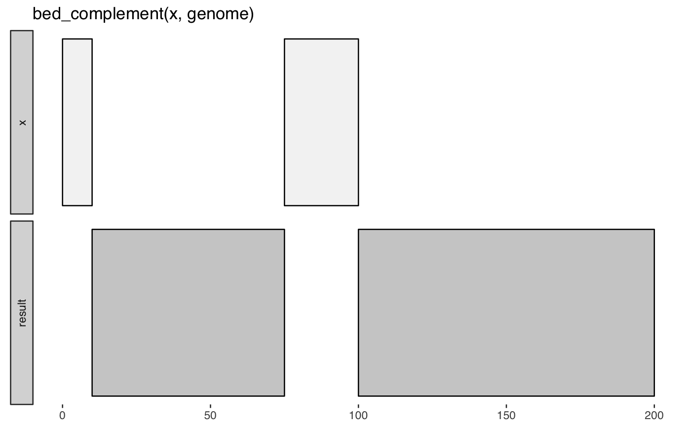

Identify intervals in a genome not covered by a query.
bed_complement(x, genome)
data_frame
Other single-set-ops: bed_cluster,
bed_flank, bed_merge,
bed_random, bed_shift,
bed_shuffle, bed_slop
x <- tibble::tribble( ~chrom, ~start, ~end, 'chr1', 1, 10, 'chr1', 75, 100 ) genome <- tibble::tribble( ~chrom, ~size, 'chr1', 200 ) bed_glyph(bed_complement(x, genome))genome <- tibble::tribble( ~chrom, ~size, "chr1", 500, "chr2", 600, "chr3", 800 ) x <- tibble::tribble( ~chrom, ~start, ~end, "chr1", 100, 300, "chr1", 200, 400, "chr2", 1, 100, "chr2", 200, 400, "chr3", 500, 600 ) # intervals not covered by x bed_complement(x, genome)#> # A tibble: 6 × 3 #> chrom start end #> <chr> <dbl> <dbl> #> 1 chr1 1 100 #> 2 chr1 400 500 #> 3 chr2 100 200 #> 4 chr2 400 600 #> 5 chr3 1 500 #> 6 chr3 600 800 #>